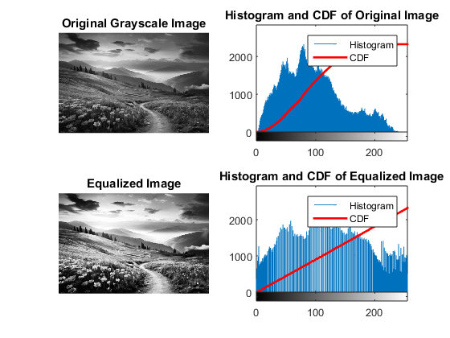

clc;
clear all;
close all;
[file, path] = uigetfile('Images/.jpg', 'Select Image');
if isequal(file, 0)
disp('No file selected. Exiting...');
return;
end
filePath = fullfile(path, file);
img = imread(filePath);
if size(img, 3) == 3
grayImg = rgb2gray(img);
else
grayImg = img;
end
[rows, cols] = size(grayImg);
histOrig = zeros(256, 1);
for r = 1:rows
for c = 1:cols
pixel = grayImg(r, c);
histOrig(pixel + 1) = histOrig(pixel + 1) + 1;
end
end
pdfOrig = histOrig / (rows * cols);
cdfOrig = cumsum(pdfOrig);
map = round(cdfOrig * 255);
equalizedImg = zeros(size(grayImg));
for r = 1:rows
for c = 1:cols
equalizedImg(r, c) = map(grayImg(r, c) + 1);
end
end
equalizedImg = uint8(equalizedImg);
histEq = zeros(256, 1);
for r = 1:rows
for c = 1:cols
pixel = equalizedImg(r, c);
histEq(pixel + 1) = histEq(pixel + 1) + 1;
end
end
pdfEq = histEq / (rows * cols);
cdfEq = cumsum(pdfEq);
figure;
subplot(2, 2, 1);
imshow(grayImg);
title('Original Grayscale Image');
subplot(2, 2, 2);
imhist(grayImg);
hold on;
plot(cdfOrig * max(histOrig), 'r', 'LineWidth', 2);
legend('Histogram', 'CDF');
title('Histogram and CDF of Original Image');
subplot(2, 2, 3);
imshow(equalizedImg);
title('Equalized Image');
subplot(2, 2, 4);
imhist(equalizedImg);
hold on;
plot(cdfEq * max(histEq), 'r', 'LineWidth', 2);
legend('Histogram', 'CDF');
title('Histogram and CDF of Equalized Image');
